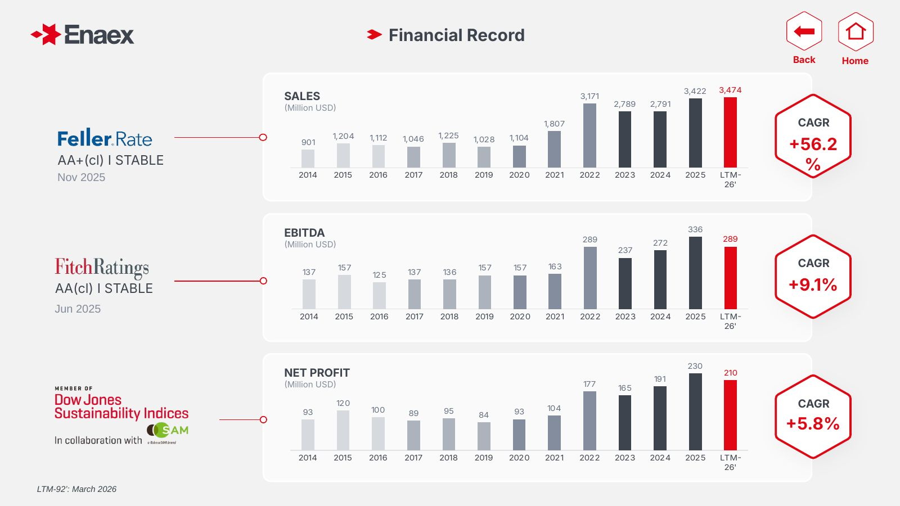
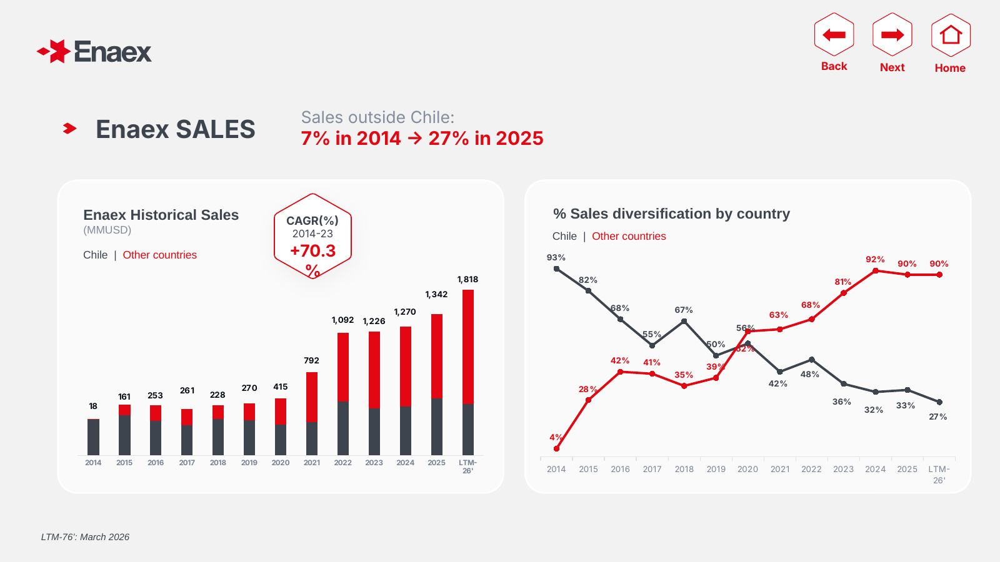
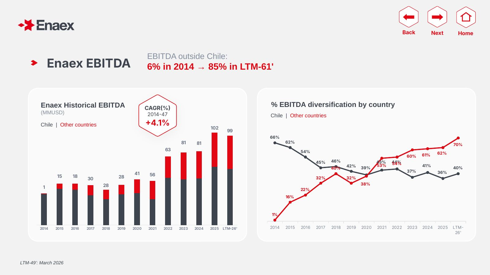
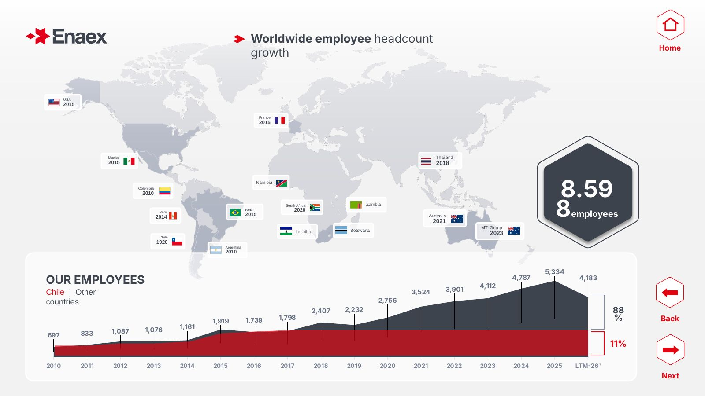
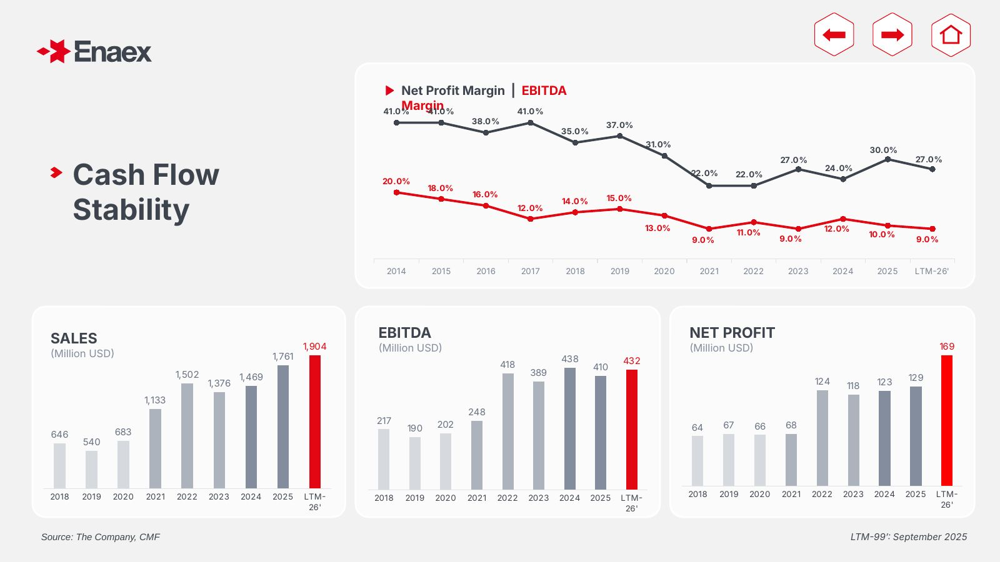
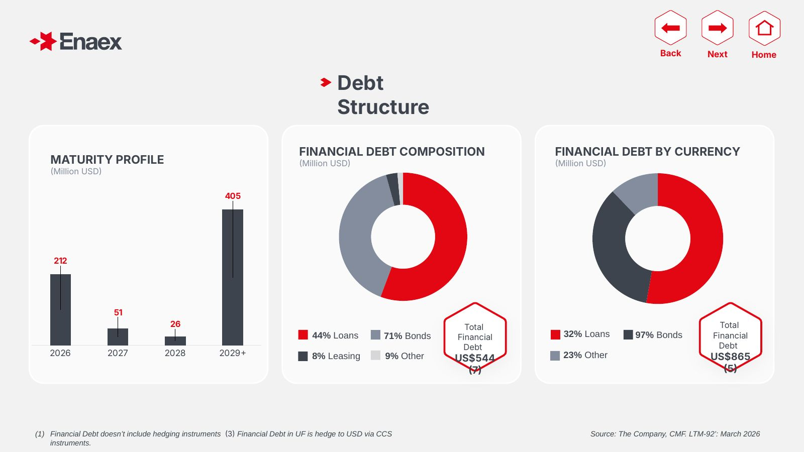
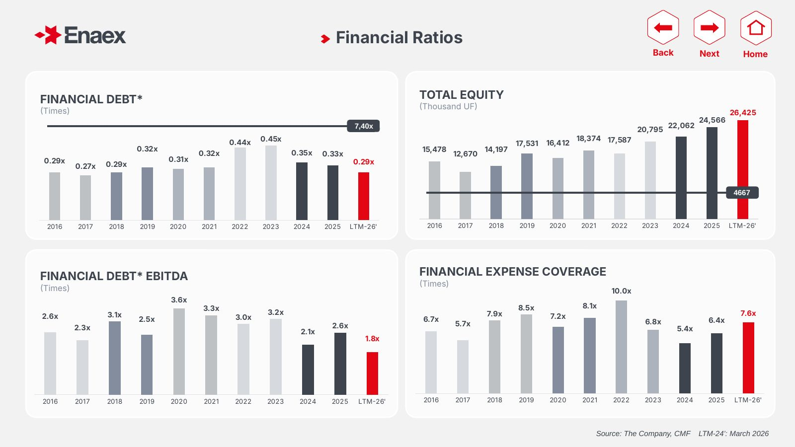

A apresentação precisava funcionar ao vivo, com quem apresenta pulando pra qualquer tema na hora, e os gráficos tinham que ser fáceis de atualizar todo ano sem refazer nada.
Enaex
Apresentação corporativa interativa, com dashboards ligados ao Excel
Projeto externo para a Enaex, empresa do setor de explosivos e mineração. Uma apresentação de estratégia e resultados financeiros que navega por cliques, com 28 gráficos alimentados por uma única planilha.
projeto externo · enaex · 2026 · powerpoint e excel
os números dos gráficos foram trocados por valores fictícios. o desenho e a estrutura são os originais.
problema
Uma apresentação de resultados que precisava ser navegada ao vivo e atualizada todo ano sem refazer os gráficos.
meu papel
Projeto externo: estruturei a planilha, montei os 28 gráficos e desenhei a apresentação inteira.
resultado
Uma base de dados alimenta todos os gráficos. Ano novo é uma linha a mais, sem mexer no PowerPoint.
O problema
Como foi construído
-
01
Uma base de dados só
Toda série anual mora numa aba DADOS. As abas de cada slide leem dela por fórmula, e ninguém digita número fora dela.
-
02
Ano novo sem refazer gráfico
Pra entrar um ano novo, basta uma linha a mais em DADOS, marcada como LTM. A barra vermelha do último período anda sozinha.
-
03
Conferência embutida
Colunas de checagem recalculam as margens. E um código de cores: azul é valor digitado, preto é fórmula, verde é referência a outra aba e amarelo é divergência encontrada no deck, pendente de confirmação com o cliente.
-
04
Gráficos vinculados ao PowerPoint
Cada gráfico é dimensionado no Excel no tamanho final do slide e colado com vínculo. A atualização automática fica desligada, pra não aparecer o aviso de vínculos na frente do público.
-
05
Navegação por cliques
Sumário clicável e botões de voltar, próximo e início em cada slide, pra apresentar em modo quiosque.
Dashboards








Customer Support vs ENAEX Subsidiaries
Outra apresentação do mesmo projeto: escopo e papéis do suporte ao cliente entre a Enaex e as subsidiárias.


O que aprendi
excel e powerpoint
- Fonte única de verdadeuma aba de dados, o resto por fórmula
SEe referência entre abasa barra do último período destacada sozinha- Colunas de checagemmargens recalculadas pra pegar erro
- Gráfico vinculadoExcel colado no PowerPoint mantendo o vínculo
- Hiperlinks internosnavegação entre slides
ferramentas
- Excelbase de dados e gráficos
- PowerPointapresentação interativa
- Illustratorícones e elementos